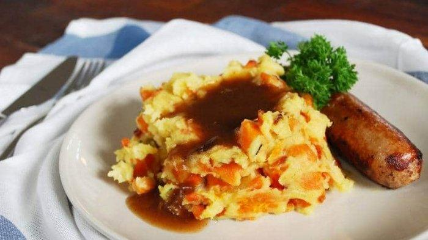

One of the most popular meals in Belgium is a potato-based side dish known as stoemp. It consists of mashed potatoes enhanced by the addition of other vegetables such as carrots and leeks. They are boiled or fried, mixed, and then puréed with mashed potatoes. Optional ingredients include fried onions, shallots, bacon, or various herbs.
Meal prep time : 40 minutes
Servings : 8